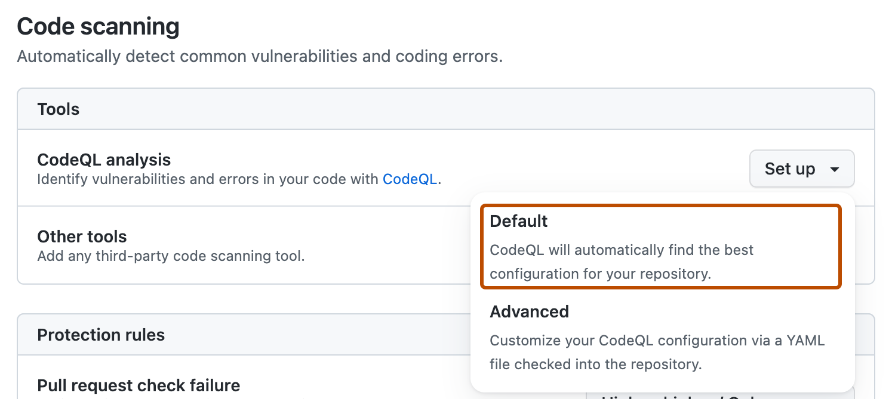

Quickly set up code scanning to find vulnerable code automatically.
We recommend that you start using code scanning with default setup. After you've initially configured default setup, you can evaluate code scanning to see how it's working for you and customize it to better meet your needs. For more information, see About setup types for code scanning.
Prerequisites
Your repository is eligible for default setup for code scanning if:
GitHub Actions is enabled.
It is publicly visible, or GitHub Code Security is enabled.
Configuring default setup for a repository
Note
If the analyses fail for all CodeQL-supported languages in a repository, default setup will still be enabled, but it will not run any scans or use any GitHub Actions minutes until another CodeQL-supported language is added to the repository or default setup is manually reconfigured, and the analysis of a CodeQL-supported language succeeds.
On GitHub, navigate to the main page of the repository.
Note
If you are configuring default setup on a fork, you must first enable GitHub Actions. To enable GitHub Actions, under your repository name, click Actions, then click I understand my workflows, go ahead and enable them. Be aware that this will enable all existing workflows on your fork.
Under your repository name, click Settings. If you cannot see the "Settings" tab, select the dropdown menu, then click Settings.
In the "Security" section of the sidebar, click Advanced Security.
Under "Code Security", to the right of "CodeQL analysis", select Set up , then click Default.

You will then see a "CodeQL default configuration" dialog summarizing the code scanning configuration automatically created by default setup.
Optionally, to customize your code scanning setup, click Edit.
To add or remove a language from the analysis performed by default setup, select or deselect that language in the "Languages" section.
To specify the CodeQL query suite you would like to use, select your preferred query suite in the "Query suites" section.
Review the settings for default setup on your repository, then click Enable CodeQL. This will trigger a workflow that tests the new, automatically generated configuration.
Note
If you are switching to default setup from advanced setup, you will see a warning informing you that default setup will override existing code scanning configurations. This warning means default setup will disable the existing workflow file and block any CodeQL analysis API uploads.
If projects in your repository depend on dependencies in private package registries, you can grant code scanning access to them. This can improve the outcomes and quality of analyses. See Giving security features access to private registries.
Optionally, to view your default setup configuration after enablement, select , then click View CodeQL configuration.
Note
If no pushes and pull requests have occurred in a repository with default setup enabled for 6 months, the weekly schedule will be disabled to save your GitHub Actions minutes.
Running default setup on self-hosted or larger runners
You can use default setup for all CodeQL-supported languages on self-hosted runners or GitHub-hosted runners.
Note
Code scanning sees assigned runners when default setup is enabled. If a runner is assigned to a repository that is already running default setup, you must disable and re-enable default setup to start using the runner. If you add a runner and want to start using it, you can change the configuration manually without needing to disable and re-enable default setup.
Assigning labels to self-hosted runners
To assign a self-hosted runner for default setup, you can use the default code-scanning label, or you can optionally give them custom labels so that individual repositories can use different runners. For information about assigning labels to self-hosted runners, see Using labels with self-hosted runners.
Once you've assigned custom labels to self-hosted runners, your repositories can use those runners for code scanning default setup.
To assign a larger runner, name the runner code-scanning. This will automatically add the code-scanning label to the larger runner. An organization can only have one larger runner with the code-scanning label, and that runner will handle all code scanning jobs from repositories within your organization with access to the runner's group. See Configuring larger runners for default setup.
Ensuring build support
Default setup uses the none build mode for C/C++, C#, Java and Rust and uses the autobuild build mode for other compiled languages. You should configure your self-hosted runners to make sure they can run all the necessary commands for C/C++, C#, and Swift analysis. Analysis of JavaScript/TypeScript, Go, Ruby, Python, and Kotlin code does not currently require special configuration.
After you've configured default setup for code scanning, you can read about evaluating how it's working for you and the next steps you can take to customize it. For more information, see Evaluating default setup for code scanning.
You can find detailed information about your code scanning configuration, including timestamps for each scan and the percentage of files scanned, on the tool status page. For more information, see Use the tool status page for code scanning.